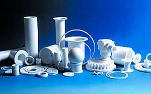

Фторопласт Ф-4
Фторопласт — уникальный материал, широко используемый в машиностроении, электротехнике, приборостроении, химической промышленности, медицине и пищевой промышленности.
Широкое применение фторопластовые изделия получили в нефте- и газодобывающих отраслях, аэрокосмической промышленности.
Материал характеризуется химической инертностью, широким диапазоном эксплуатационных температур, хорошими диэлектрическими и механическими свойствами, малой пористостью и гидрофобностью.
Продукт представлен под названием политетрафторэтилен (ПТФЭ, PTFE), тефлон, фторопласт-4